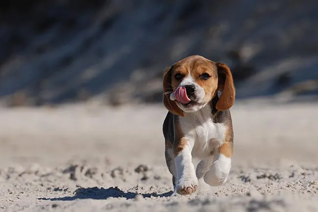
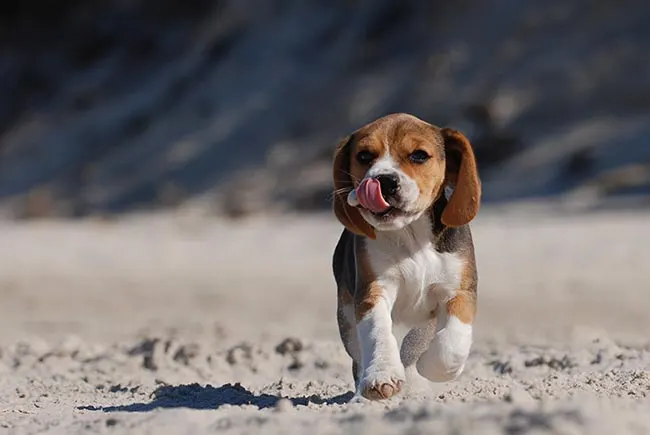

PERROS EN ADOPCIÓN
La Fundación Ayuda a un peludo es una organización
no gubernamental dedicada a la protección y el bienestar
de los animales domésticos en situación de abandono. Fundada en
2005 por un grupo de voluntarios apasionados por los derechos de
los animales, nuestra ONG trabaja incansablemente para rescatar,
rehabilitar y encontrar hogares amorosos
para perros, gatos y otras mascotas en situación de vulnerabilidad.
Nuestros perros que buscan familia:
 
Dabi

Dabi